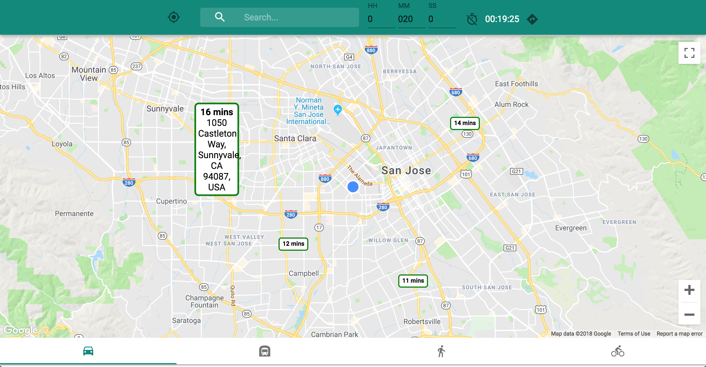
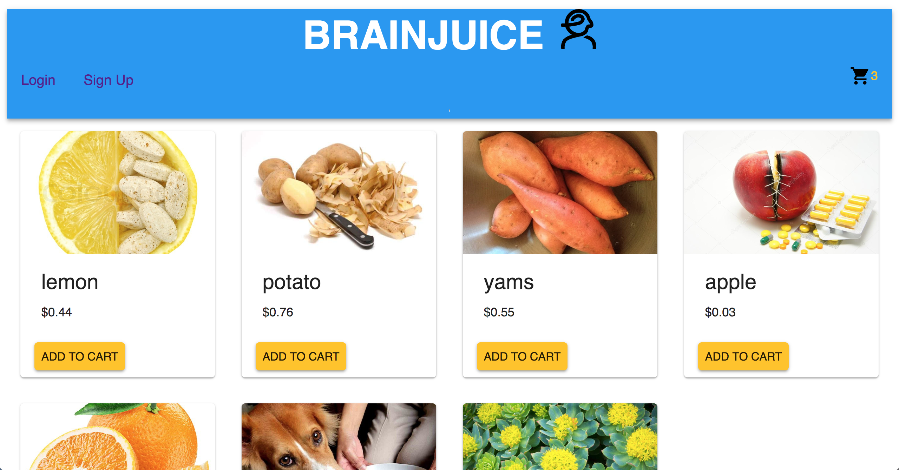

ABOUT
After my studies in Civil Engineering, I reaffirmed my interests were in designing creative solutions to solve problems.
Studying Civil Engineering taught me to approach problem solving in a systematic way, but I realized that a career that was less restricted by codes and standards was more important to me.
So I learned web development in JavaScript to be able to build web applications and solve problems. Outside of coding, I am a theme park enthusiast and enjoy discovering themed experiences. I am also interested in Tech in Transportation.
SKILLS


Learning

PROJECTS
Find food trucks in SF
Technologies used:
Google Maps, React, Redux, Node.js and Express.
Herd - location sharing for tours
Technologies used:
React, Redux, Express, Firebase, Heroku, Google Maps API,
Material-UI, Geolocation API
Reach - real-time trip timer

Technologies used:
React, Redux, Firebase hosting, Google Maps API,
Material-UI, Web Geolocation API
Brainjuice - eCommerce web app

Technologies used:
React, Redux, Express, Sequelize, PostgreSQL,
Heroku